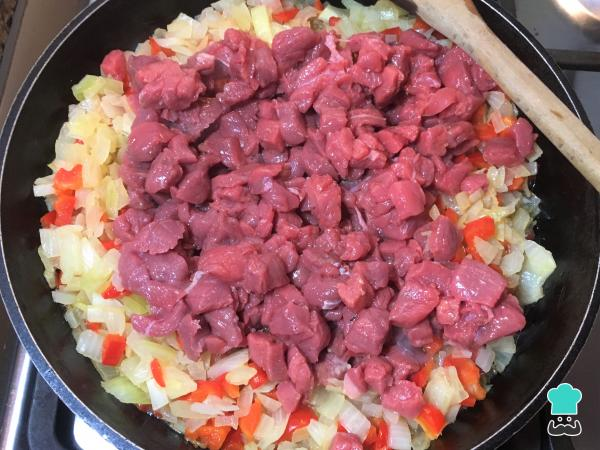
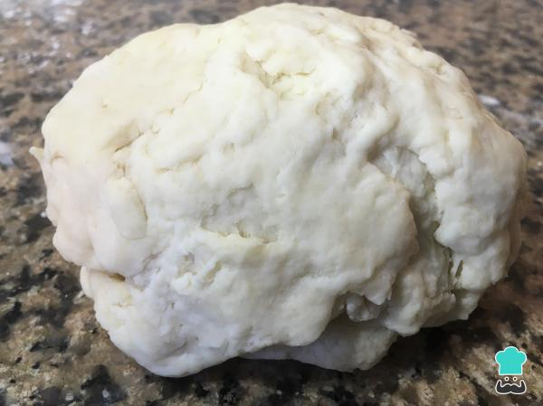

Acá les traigo una Bomba! Para un 25 de Mayo o después de
una buena picada no pueden faltar unas riquisímas Empanadas Criollas.
Los ingredientes que vámos a necesitar son:
Ingredientes:
Para el Relleno
500 gramos de carne vacuna picada o cortada en cubos
500 gramos de cebolla
1 orégano
1 comino
1 ají molido
1 pimentón dulce
1 cda de sal
3 huevos duros
Aceitunas verdes sin carozo o hueso
Pasas de uva sin carozo o hueso (opcional)
Aceite o grasa
Para la Masa
500 gramos de harina
75 gramos de manteca
1 cda de sal
240 ml de agua
Preparacion
Para comenzar con estas empanadas criollas saladas, pica la cebolla bien pequeña.
Quítale las semillas y las partes blancas al pimiento rojo, pícalo bien pequeño.
En un sartén calienta abundante aceite o grasa.
Rehoga la cebolla y el pimiento hasta transparentar.
Truco: Es importante la cantidad de cebolla
que utilices porque te ayudará a obtener unas empanadas criollas jugosas.
Agrega al sarten la carne, ya sea picada o cortada con cuchillo en pequeños cubitos.
Mézclala bien con la cebolla y el pimiento. Añade una cucharadita de sal y revuelve.

Una vez que la carne haya cambiado de color, agrega los condimentos: una cucharadita de orégano,
1/2 cucharadita de comino,1/2 cucharadita de ají molido y una abundante cucharada de pimentón dulce. Agrega
también 1/2 vaso de caldo de carne y mezcla bien la preparación. Apaga el fuego y deja reposar el relleno.
Para realizar la masa de estas empanadas criollas al horno, vuelca la harina
en una superficie apta para amasar. Hazle un hueco en el centro formando una corona. En un recipiente con
el agua caliente, agrégale una cucharadita de sal y revuelve. Esta mezcla se conoce como salmuera.
En el centro de la corona agrega la mantequilla (o grasa) derretida y la mitad de la salmuera.
Mezcla de a poco hasta humedecer toda la harina.
A medida que vayas mezclando la harina, continúa vertiendo el agua con sal. Sigue mezclando con
las manos hasta amalgamar bien y formar un bollo para poder amasar tus empanadas criollas argentinas.
Amasa por unos 10 minutos hasta obtener una masa bien homogénea.
Con esta cantidad de masa salen 2 docenas de discos de empanadas.

Parte el bollo por la mitad y forma un cilindro con ambas mitades.
Divide cada cilindro en 12 partes iguales.
Forma 24 bollos y déjalos descansar 10 minutos aproximadamente, tapándolos con un paño.
Pasado los 10 minutos, comienza a formar los discos estirando con un palo o rodillo de amasar
hasta llegar a unos 12 cm de diámetro. Debe quedar una masa muy lisa y suave.
Una vez que tienes todos los discos, procede a rellenar las empanadas criollas de carne.
Pica 2 o 3 huevos duros y las aceitunas. Con una cuchara sopera, coloca el relleno en el medio
del disco, agrega un poco de huevo picado y aceitunas. Puedes agregar pasas de uva si son de tu agrado.
Una vez colocado el relleno, dobla la tapa y aprieta los bordes.
Si la tapa de la empanada no se pega fácilmente, moja con muy poquita agua el borde.
Realiza el repulgue usando el dedo índice y pulgar y haciendo pequeños dobleces a la masa.
Si no puedes hacer el repulgue, lo importante es que el borde de la empanada quede bien sellado,
así que puedes ayudarte con un tenedor y apretar todo el borde para cerrar la empanada.
De esta forma, no se sale el relleno ni el jugo de la empanada.
Coloca las empanadas en una placa para horno ligeramente aceitada.
Llévalas al horno a 180 °C hasta que la masa se dore (alrededor de media hora).
Truco: Si quieres hacer empanadas criollas fritas, prepáralas en una sartén honda
con abundante aceite caliente o grasa derretida.
Una vez doradas, retíralas del horno y deja que se enfríen un poco.
Sírvelas en bandeja y a disfrutar de estas deliciosas empanadas criollas jugosas.